结论：第 4 次 700 步测试视觉完成，四轮成功率 1/4
第 4 次有完整录像的 700 步复测完成了 4 个瓶子的抓取、交接与投放，并在约 step 656 释放最后一瓶，step 700 时双臂已归位。四轮完成度为 2/4、3/4、3/4、4/4，视觉完成率为 1/4；700 步对 π0.5 是可达但余量很小的预算。
九轮日志中的 reward=0 不能单独作为失败证据，因为自定义测试循环没有调用官方 reward_manager.step()。本轮通过结论来自完整录像逐帧检查和终态画面，属于视觉判定；官方几何评分仍待修复后复测。
性能分析
性能瓶颈不在 NPU 计算
全部 204 次决策中，NPU 纯推理均值为 553.8 ms，P95 为 585.3 ms，波动很小。端到端往返均值为 5549.7 ms，P95 为 11161.0 ms，平均约有 4995.9 ms 花在图像传输、序列化、排队和服务处理上。
因此下一步应优先优化链路，而不是继续压缩模型计算时间。每次请求约 3.687 MB，三路 RGB 图像是主要载荷。
仿真执行慢于实时
每个 50 步动作块代表 2 秒仿真时间，但执行与四视角渲染平均约需 9 秒。2500 步完整录屏轮的 100 秒仿真轨迹耗时 874.06 秒，实时因子为 0.114×，即约 8.74 秒墙钟时间推进 1 秒仿真。
四次 700 步录像的块执行均值分别为 9.23、9.09、9.14 和 9.25 秒，说明 MP4 编码没有形成明显新增瓶颈；墙钟差异主要来自推理往返波动。
各轮决策时延
轨迹分析
控制跟踪总体稳定
2500 步完整录屏轮中，左臂关节命令与实测值的绝对误差均值为 0.000818 rad，P95 为 0.001251 rad；右臂分别为 0.000395 rad 和 0.000717 rad。绝大多数控制步的关节跟踪误差很小。
左臂与右臂命令轨迹累计 L2 路径长度分别为 54.46 rad 和 34.52 rad，左臂承担了更多操作。
动作块边界没有明显跳变
该 2500 步轮次左臂在 50 步块边界处的平均命令变化为 0.0192 rad，低于块内平均的 0.0218 rad；右臂为 0.0104 rad 对 0.0139 rad。当前 50 步 chunk 没有表现出系统性边界冲击。
日志存在少量最大误差离群点（左臂 0.760 rad、右臂 0.311 rad），与总体 P95 相差很大。报告将其视为瞬态事件，后续应按时间点对照碰撞和复位画面。
夹爪动作有切换，但未到零值
该 2500 步轮次左夹爪命令范围为 0.415–1.003，共跨越 0.5 阈值 20 次；右夹爪范围为 0.418–1.008，共切换 6 次。命令大部分时间高于 0.8。
由于当前归一化方向和实际开合距离需要结合 ARX X5 配置解释，仅凭数值不能判定抓取力；应在后续报告中同时记录实测夹爪宽度和接触力。
700 步可达，但成功余量很小
700 步对应 14 次模型决策和 28 秒仿真时间；1000 步对应 40 秒；2500 步对应 100 秒。第 4 次 700 步运行在约 step 656 释放最后一瓶并完成归位，证明官方预算内存在成功轨迹；前三次停在 2/4、3/4、3/4，说明该预算下策略成功余量很小。
但当前只有布局 0、种子 0，尚不能把这一观察外推到官方评测集。
四次 700 步行为对比
四轮前 50 步动作都很相似，两两动作向量 L2 差异均值为 0.060–0.160；最后 50 步差异增至 2.255–3.506，说明后半程会因策略采样和物体状态变化明显分叉。四轮分别完成约 2、3、3、4 瓶。
共同点是逐瓶串行抓放、双臂没有形成稳定的并行流水。每瓶约占用 150–250 个控制步；成功轮直到约 step 656 才释放最后一瓶，因此只剩约 44 步用于归位，容易受后半程轨迹分叉影响。
控制链路不是主要失败点
最新成功轮左臂关节跟踪绝对误差均值约 0.000621 rad、P95 0.002177 rad；右臂均值约 0.000251 rad、P95 0.001061 rad。机械臂按命令运动，14 次 NPU 推理也全部成功。
四轮推理往返均值分别为 8.61、3.60、5.06、3.01 秒，墙钟耗时分别为 251.02、179.03、200.01、172.98 秒。网络等待影响墙钟耗时；是否在 700 仿真步内完成主要由策略轨迹决定。
完成情况与评分有效性
自动 reward 当前无效
官方任务成功条件是 4 个瓶子都位于 dustbin 底部有效区域，并且双臂末端回到初始位姿（位置容差 0.15 m、旋转容差 20°）。自定义执行器只调用了 get_reward()，没有像官方 src/eval_client/eval_env.py 那样先调用 reward_manager.step()，因此九轮的 reward 都保持为 0。
尝试直接调用 is_A_on_B_bottom 时，官方 geometry.get_state() 又出现 cuda:0 与 CPU 张量不一致异常。修复这两项并重跑之前，不能报告官方成功率。
人工视觉结论
本轮 700 步视觉通过。逐帧画面显示最后一瓶在约 step 656 进入桶侧，随后双臂归位；step 700 桌面清空。两次 2500 步扩展运行也保持视觉完成。
结论边界
录像能证明物体离开桌面并进入桶口方向，但不能替代官方几何判定，也不能确认每个瓶子是否落在奖励函数定义的桶底高度范围。最终结论应写为“视觉完成，官方评分待修复后复测”。
四次 700 步复测
1/4 视觉通过。四段录像各 701 帧，完成度为 2/4、3/4、3/4、4/4。最新轮在约 step 656 投放最后一瓶，并在截止前完成双臂归位。
模型能力分析
已经验证
能够理解三路相机输入并连续生成双臂 14 维动作；能够在同一布局中执行长时程、多物体、双臂抓取与搬运动作；一次 700 步和两次 2500 步运行最终清空桌面。
表现特点
左臂动作路径显著长于右臂；50 步动作块衔接平滑；NPU 纯推理稳定在约 0.55 秒；延长预算后完成度明显提高。
尚未验证
官方成功率、不同布局与随机种子的泛化、首次成功步数、瓶子最终几何位置、夹爪接触力、故障恢复能力，以及与 GPT/混合策略的公平性能对比。
参数配置与执行原理
采集观测
头部、左腕、右腕 RGB，相机关节状态；overview 仅用于监控。
NPU 推理
一次请求约 3.687 MB，π0.5 返回 50 × 14 动作块。
25 Hz 控制
每个动作含左右臂各 6 关节与各 1 个夹爪值。
250 Hz 物理
每个控制步执行 10 个 PhysX 子步，合计 40 ms 仿真时间。
重新观测
50 步执行完重新采图和推理，最多 50 次决策。
| 任务 / 布局 | put_bottles_into_dustbin / 官方 Layout 0 / seed 0 | 机器人 | 双 ARX X5，关节位置控制 |
|---|---|---|---|
| 策略输入 | cam_head、cam_left_wrist、cam_right_wrist + 14 维状态 | 监控输入 | 额外 cam_monitor_overview，不送入策略 |
| 动作 | 50 步 chunk，每步 14 维 | 频率 | 25 Hz 控制 / 250 Hz PhysX |
| 最大预算 | 14、20、50 次决策；对应 700、1000、2500 控制步 | 录屏 | 四视角 2×2，H.264，1280×960，25 fps |
| NPU 服务 | robodojo-arx-x5-v2，use_delta_joint_actions=true | GPU→NPU | 反向 SSH 隧道，经 127.0.0.1:18642 |
| 模型权重 | /data/pi05_hybrid/weights/robodojo_pi05_pt/ | 容器镜像 | /data/pi05_hybrid/pi05-hybrid-v1.tar.gz，镜像不含权重 |
说明：官方任务默认 step limit 为 700。1000/2500 步是诊断性扩展预算，不能直接作为官方同口径成绩。
具体测试数据
| Run ID | 决策 | 控制步 | 仿真秒 | 墙钟秒 | 往返均值 | 往返 P95 | NPU 均值 | 块执行均值 | 完成判定 |
|---|---|---|---|---|---|---|---|---|---|
| layout0_700_video_repeat4_210134 | 14 | 700 | 28 | 172.979 | 3014.1 ms | 4620.2 ms | 549.7 ms | 9250.6 ms | 视觉通过：step ≈656 投放第 4 瓶并归位 |
| layout0_700_video_repeat3_182547 | 14 | 700 | 28 | 200.009 | 5056.9 ms | 8313.2 ms | 543.1 ms | 9136.3 ms | 3 瓶完成，第 4 瓶仍在桌面 |
| layout0_700_video_repeat_180809 | 14 | 700 | 28 | 179.027 | 3602.5 ms | 5046.9 ms | 556.9 ms | 9091.2 ms | 3 瓶完成，第 4 瓶抓持中 |
| layout0_700_video_174926 | 14 | 700 | 28 | 251.020 | 8607.5 ms | 11179.1 ms | 550.5 ms | 9231.8 ms | 视觉未完成 + 完整录像 |
| layout0_v2_091940 | 14 | 700 | 28 | 197.656 | 5035.7 ms | 9506.6 ms | 562.6 ms | 8964.6 ms | 无完整录像结论 |
| layout0_repeat_093108 | 14 | 700 | 28 | 170.864 | 3100.3 ms | 3684.9 ms | 549.2 ms | 8987.8 ms | 无完整录像结论 |
| layout0_extended20_094605 | 20 | 1000 | 40 | 284.854 | 5088.6 ms | 8531.1 ms | 548.8 ms | 9038.3 ms | 无完整录像结论 |
| layout0_extended50_095349 | 50 | 2500 | 100 | 674.138 | 4204.4 ms | 7254.7 ms | 553.8 ms | 9166.1 ms | 视觉通过 |
| layout0_extended50_video_101824 | 50 | 2500 | 100 | 874.060 | 8363.9 ms | 13933.6 ms | 558.6 ms | 9011.9 ms | 视觉通过 + 完整录像 |
| 合计 / 加权 | 204 | 10200 | 408 | 3004.607 | 5549.7 ms | 11161.0 ms | 553.8 ms | 9092.8 ms | 自动评分无效 |
往返统计来自策略 trace 中的 inference 事件；NPU 时间由推理服务返回；动作块执行时间来自 GPU 端 performance 日志。失败启动和仅运行 1 轮的诊断过程未纳入汇总。
完整录屏与终态
第四次 700 步测试（视觉完成，约 step 656 投放第 4 瓶）
28.04 秒 · 701 帧 · H.264 · 1280×960 · 25 fps；墙钟耗时 172.98 秒。录像包含初始帧和全部 700 个控制步。
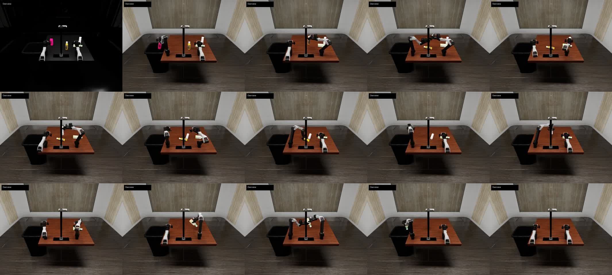
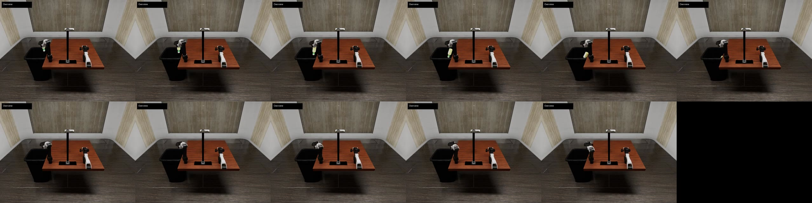
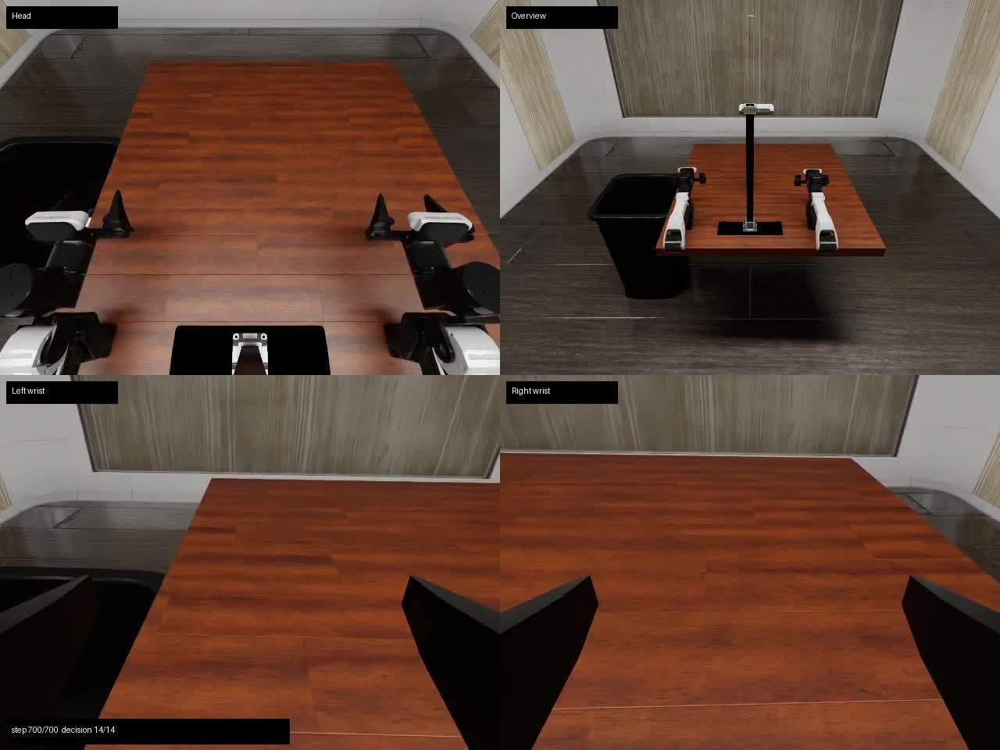
第三次 700 步测试（3 瓶完成，第 4 瓶仍在桌面）
28.04 秒 · 701 帧 · H.264 · 1280×960 · 25 fps；墙钟耗时 200.01 秒。录像包含初始帧和全部 700 个控制步。
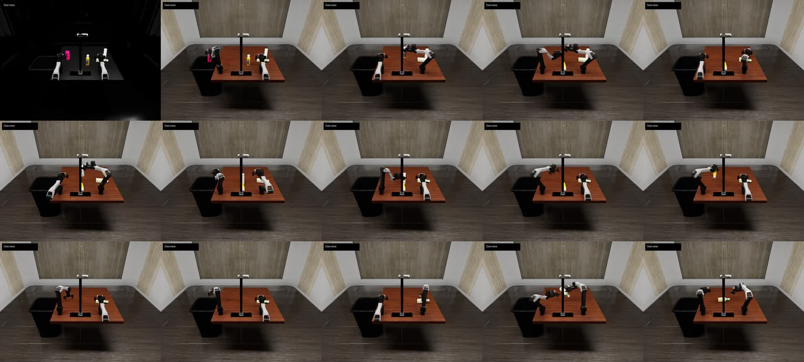
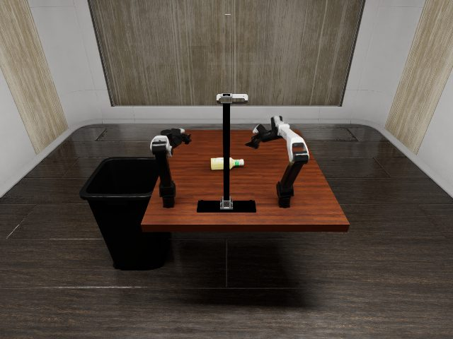
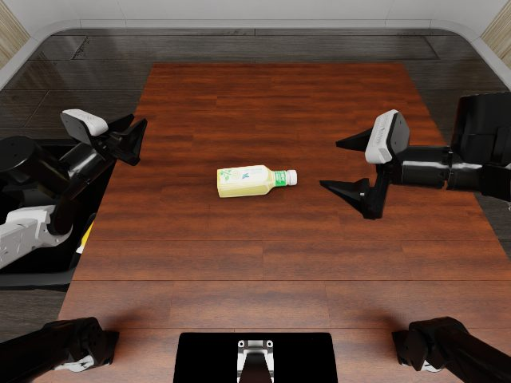
第二次 700 步测试（3 瓶完成，第 4 瓶抓持中）
28.04 秒 · 701 帧 · H.264 · 1280×960 · 25 fps；墙钟耗时 179.03 秒。录像包含初始帧和全部 700 个控制步。
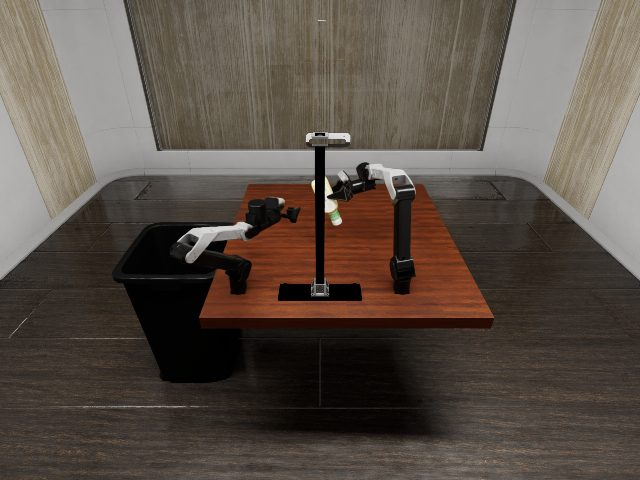
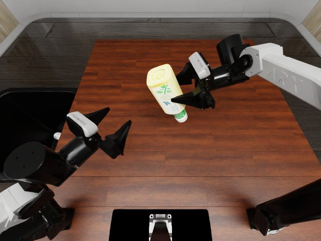
第一次 700 步正式预算复测（约 2 瓶完成）
28.04 秒 · 701 帧 · H.264 · 1280×960 · 25 fps；墙钟耗时 251.02 秒。录像包含初始帧和全部 700 个控制步。
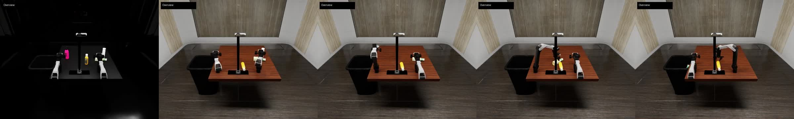
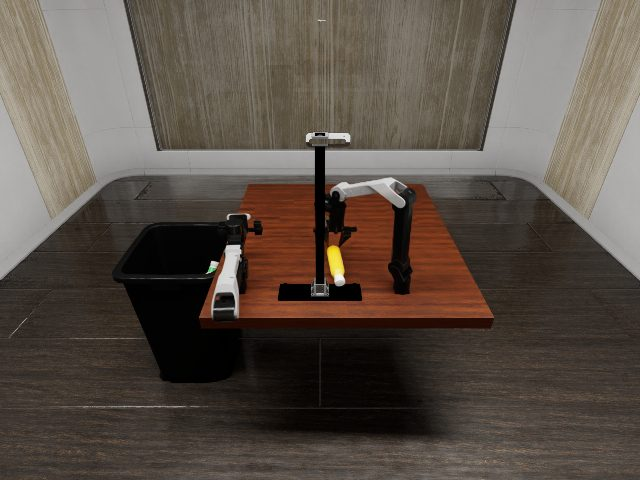
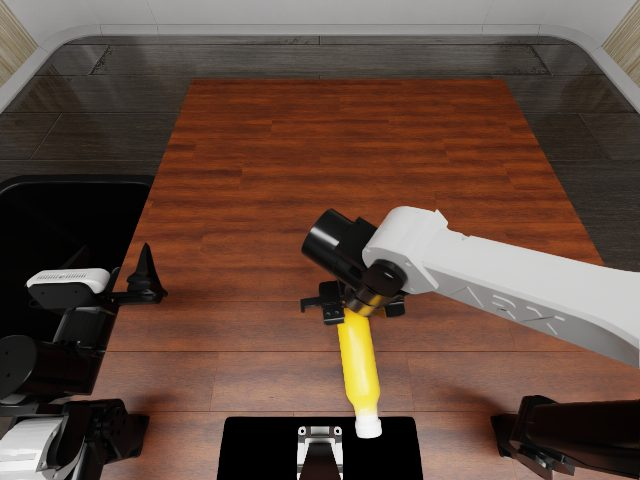
2500 步扩展预算历史测试（视觉完成）
100.04 秒 · H.264 · 1280×960 · 25 fps · 四视角：头部、总览、左腕、右腕。视频时间对应仿真时间；整轮墙钟耗时 874.06 秒。
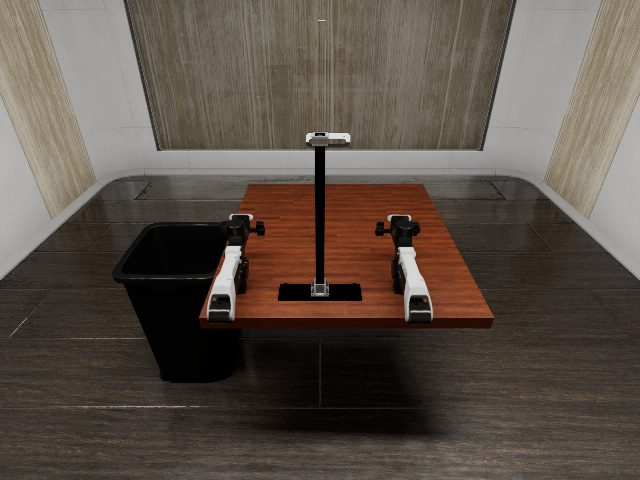
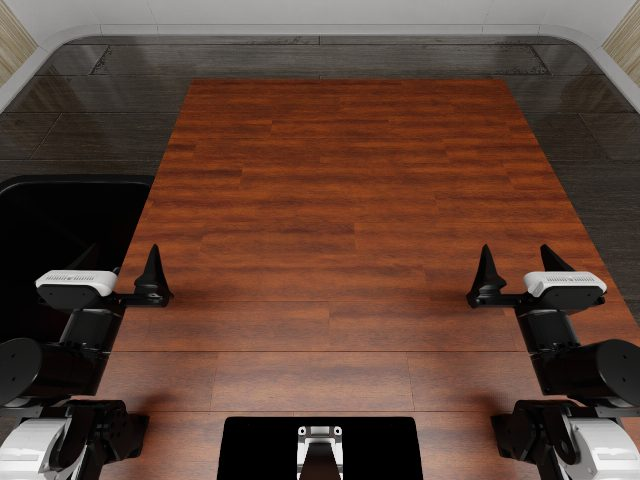
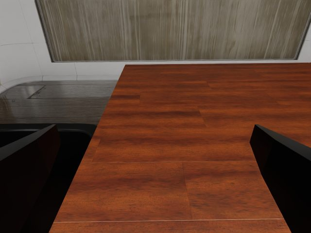
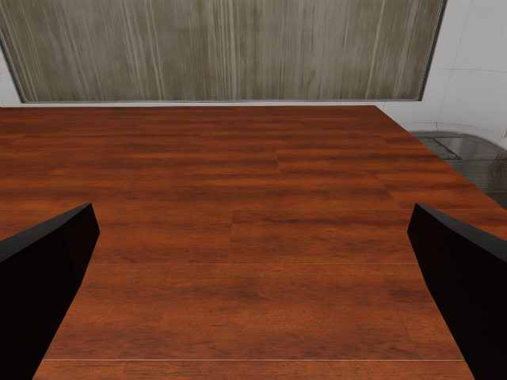
原始数据内置查看器
九次有效运行的模型 trace、逐步执行轨迹和逐决策性能日志都可在当前报告内查看。数据按原始 JSONL 行展示，不修改字段或数值；大文件采用分页渲染，避免一次显示 2500 行造成页面卡顿。
正在载入…
每页 20 行。查看器读取本报告同目录的原始证据文件，但内容始终显示在本页，不发生页面跳转。完整四视角录像已在上一节内嵌播放。
reward_manager.step(env_idx_list=[0])；修复 geometry 状态中环境原点张量的设备一致性；同时记录 4 个瓶子的独立判定、双臂归位判定和首次成功步数。修复后用官方 700 步预算与扩展预算各跑多 seed。